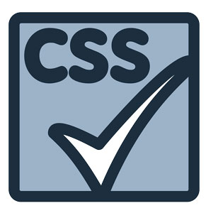

 CSS son las siglas de “Cascading Style Sheets” (hojas de estilo en cascada). CSS es un lenguaje para la composición y estructuración de páginas web (HTML o XML). Este lenguaje contiene
elementos de codificación y se compone de estas “Cascading Style Sheets” que también se llaman archivos CSS (.css).
¿Para que sirve?
CSS es una especificación desarrollada por el W3C (World Wide Web Consortium) para permitir la separación de los contenidos de los documentos escritos en HTML, XML, XHTML, SVG, o XUL de la presentacin del documento con las hojas de estilo, incluyendo
elementos tales como los colores, fondos, márgenes, bordes, tipos de letra..., modificando as la apariencia de una página web de una forma más sencilla, permitiendo a los desarrolladores controlar el estilo y formato de sus documentos.
¿Cómo funciona?
El lenguaje CSS se basa en una serie de reglas que rigen el estilo de los elementos en los documentos estructurados, y que forman la sintaxis de las hojas de estilo. Cada regla consiste en un selector y
una declaración, esta última va entre corchetes y consiste en una propiedad o atributo, y un valor separados por dos puntos.